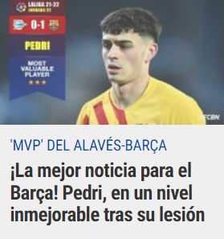
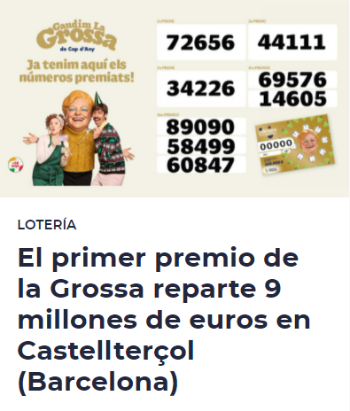
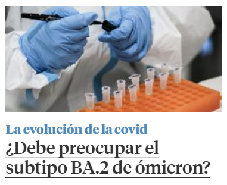

Recinto deportivo propiedad del Fútbol Club Barcelona
Park Güell
Parque con jardines y elementos arquitectónicos
Plaza España
La plaza de España fue proyectada por Ildefonso Cerdá en su proyecto de Ensanche como vía de comunicación entre Barcelona y las poblaciones del Bajo Llobregat. Después de un primer proyecto para urbanizar la plaza de Josep Amargós (1915), finalmente se
encargaron de las obras Josep Puig i Cadafalch y Guillem Busquets, continuadas por Antoni Darder desde 1926.2 Diseñaron un conjunto monumental de forma circular, en torno a un hemiciclo formado por una columnata de estilo barroco,
influenciada en la plaza de San Pedro de la Ciudad del Vaticano de Bernini. En la plaza se construyeron los hoteles de la exposición, obra de Nicolás Rubió Tudurí, de los que solo queda en pie el situado entre la Gran Vía y la calle
Creu Coberta, actualmente destinado al CEIP "Francesc Macià" y al Instituto Municipal de Educación. En el acceso de la plaza que conduce a la avenida de la Reina María Cristina se situaron dos altas torres en forma de campaniles, obra
de Ramon Reventós, inspirados en el campanile de San Marcos de Venecia.
Es un importante centro del tránsito de la ciudad, al confluir en ella la Gran Vía de las Cortes Catalanas, la avenida del Paralelo, la calle Tarragona, la calle Creu Coberta y la avenida de la Reina María Cristina, a través de la que se accede a la zona
de Montjuic, y donde se sitúa la Feria de Muestras y el Museo Nacional de Arte de Cataluña. Otros edificios importantes de la plaza son el Centro Comercial Las Arenas (antigua plaza de toros, obra de estilo neomudéjar de Augusto Font
Carreras) y el Hotel Plaza, así como las llamadas Torres Venecianas, obra de Ramon Reventós, construidas para la Exposición de 1929. También se encuentran el Instituto Municipal de Educación y una comisaría de los Mozos de Escuadra.
El Camp Nou acoge los partidos de fútbol del primer equipo del Club desde septiembre de 1957. El nuevo estadio del Barça sustituyó el antiguo campo de Les Corts, que a pesar de que tenía una capacidad para 48.000 espectadores (después
de varias ampliaciones) se quedó pequeño con la gran expansión de la afición azulgrana experimentada a finales de la década de los cuarenta. Los arquitectos Francesc Mitjans Miró y Josep Soteras Mauri (con la colaboración de Lorenzo
García Barbón) diseñaron el Estadio, que se construyó entre 1955 y 1957 a base de hormigón y hierro. La obra costó unos 288 millones de pesetas y supuso el endeudamiento del Club durante unos años.
Aunque inicialmente no tenía nombre, una encuesta entre los socios celebrada en septiembre de 1965 estableció como nombre oficial Estadio del CF Barcelona. De todos modos, popularmente desde 1957 se bautizó como Camp Nou, ya que el estadio
sustituía el antiguo campo de Les Corts, el campo viejo. En abril de 2001 se oficializó el nombre de Camp Nou después de una consulta popular, a través del correo, entre los socios de la Entidad. De las 29.102 respuestas que se remitieron
al Club, un total de 19.861 (el 68.25%) apostaron por Camp Nou en lugar de Estadio del FC Barcelona. El Estadio tiene una altura máxima de 49,67 metros y una superficie de 58.760 metros cuadrados (260 metros de longitud y 226 de anchura).
Siguiendo la normativa de la UEFA, el terreno de juego hace 105 m x 68 m.
El parque Güell es un reflejo de la plenitud artística de Gaudí: pertenece a su etapa naturalista (primera década del siglo XX), período en que el arquitecto perfeccionó su estilo personal, a través de la inspiración en las formas orgánicas
de la naturaleza, para lo que puso en práctica toda una serie de nuevas soluciones estructurales originadas en sus profundos análisis de la geometría reglada. A ello añade el artista catalán una gran libertad creativa y una imaginativa
creación ornamental: partiendo de cierto barroquismo sus obras adquieren gran riqueza estructural, de formas y volúmenes desprovistos de rigidez racionalista o de cualquier premisa clásica.1 En el parque Güell desplegó Gaudí todo su
genio arquitectónico y puso en práctica muchas de sus innovadoras soluciones estructurales que serían emblemáticas de su estilo organicista y que culminarían en la Sagrada Familia.
El parque fue concebido por Güell y Gaudí como un conjunto estructurado donde, dentro de un incomparable marco de belleza natural, se situarían unas viviendas de alto standing, con todos los adelantos tecnológicos de la época para procurar
el máximo confort y con unos acabados de gran calidad artística. Asimismo, idearon un conjunto impregnado de un fuerte simbolismo, ya que procuraron sintetizar en los elementos comunes del parque muchos de los ideales tanto políticos
como religiosos que compartían mecenas y arquitecto: así, son perceptibles en el conjunto conceptos procedentes del catalanismo político —sobre todo en la escalinata de acceso, donde se representan los Países catalanes— y de la religión
católica —en el monumento al Calvario, ideado en principio como capilla—. También es importante el elemento mitológico: según parece, Güell y Gaudí se inspiraron en el templo de Apolo de Delfos para su concepción del parque.2
Restaurante célebre, spa y habitaciones refinadas con bañera de hidromasaje.
Cinc Sentits
Restaurante chic que ofrece menús degustación de platos catalanes modernos y sofisticados
ABaC
Abac es su restaurante en Barcelona galardonado con 3*** por la Guía Michelin y Nominado como Mejor Restaurante de Cataluña 2011 por la Academia Catalana de Gastronomía, y que forma parte del Abac Hotel. El restaurante se encuentra en
contacto con el jardín por lo que interior y exterior coinciden a través de grandes ventanales. Así podrás disfruta de esta gran experiencia gourmet y ser libre para tocar el cielo.
Cinc Sentits
En el céntrico barrio barcelonés de L'Eixample encontrarás el restaurante Cinc Sentits donde podrás degustar lo mejor de la cocina de autor, en un lugar perfecto para una velada tranquila y agradable. La filosofía del restaurante es utilizar
los mejores ingredientes para ofrecer a sus comensales los platos más típicos del recetario catalán, elaborados con los productos más frescos del mercado.
Playa
La Barceloneta
La playa de la Barceloneta es la más antigua y famosa de las playas de la ciudad de Barcelona. Fue remodelada justo antes de los Juegos Olímpicos de 1992. Se encuentra en el barrio de La Barceloneta
Esta playa está ligada de modo indisociable al barrio del mismo nombre, la Barceloneta, el barrio más marinero de Barcelona, donde los barceloneses acostumbran a degustar platos de pescado, marisco y tapas. Situada en un barrio tradicional
de pescadores, es una de las playas más antiguas y entrañables de Barcelona: quizás, Miguel de Cervantes situara en esta playa el combate de don Quijote con el caballero de la Blanca Luna, combate del que salió perdedor y le llevó
a abandonó abandonar definitivamente sus delirios de caballero andante.
Servicios
Salvamento y socorrismo, Guardia Urbana, punto de información playa, consigna, duchas adaptadas, lavabos públicos adaptados, área de juego infantil, hamacas, parasoles, quioscos de bebidas y helados, aparcamiento para bicicletas, restaurantes
y Wi-fi.
Deportes, náutica y otras actividades
Área de gimnasia, vóley-playa, ta-ka-tá, ping-pong.
Últimas noticias

Xavi Hernández lo ha dicho y Pedri González lo demostró en el campo: "Ya lidera". El centrocampista ha regresado por todo lo alto tras más de tres meses 'KO'. Ha dejado atrás todas sus dolencias y vuelve a sus andanzas de la temporada
pasada: ser clave para un FC Barcelona que conoce muy bien y donde se siente cada vez más cómodo. Es un futbolista que genera, no se esconde y que mantiene el orden. Un todo en uno. Un regalo para el Barça.
El juego asociativo de Pedri es para analizarlo. No tiene problemas en jugar con sus compañeros en la medular, pero con quienes mejor conecta es con los delanteros.

El primer premio del sorteo de La Grossa de Cap d'Any, dotado con 200.000 euros por billete jugado, ha recaído en el número 72656 y se ha vendido en Castellterçol (Barcelona). El segundo premio, al que corresponden 65.000 euros por
cada billete de 10 euros, es para el número 44111 -vendido en Barcelona y en Granollers-, mientras que el tercer premio, de 30.000 euros por décimo, es para el número 34226 -vendido en Gironella (Barcelona)- y por internet.
Como es habitual, La Grossa también ha repartido dos cuartos premios de 10.000 euros por billete, que han sido para los números 69.576 y 14.605, y tres quintos premios de 5.000 euros por décimo, que han recaído en los números 89.090,
58.499 y 60.847.

La incidencia por coronavirus ha bajado en 37 puntos tras el fin de semana, hasta los 3.381 casos, con 305.432 nuevos contagios notificados, un dato inferior al mismo período de la semana pasada (331.467), aunque la presión hospitalaria
vuelve a subir leves décimas en planta (15,7 %) y en las unidades intensivas (23,9 %).
Según los datos del Ministerio de Sanidad, se han notificado 253 muertes como consecuencia de la Covid-19, cifra que asciende a 573 en la última semana. En todo el mundo, el nuevo coronavirus, el COV-SARS-2, y la enfermedad que provoca,
la COVID-19, deja ya más de 350 millones de casos, con cerca de 5,5 millones de muertos.